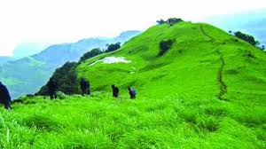
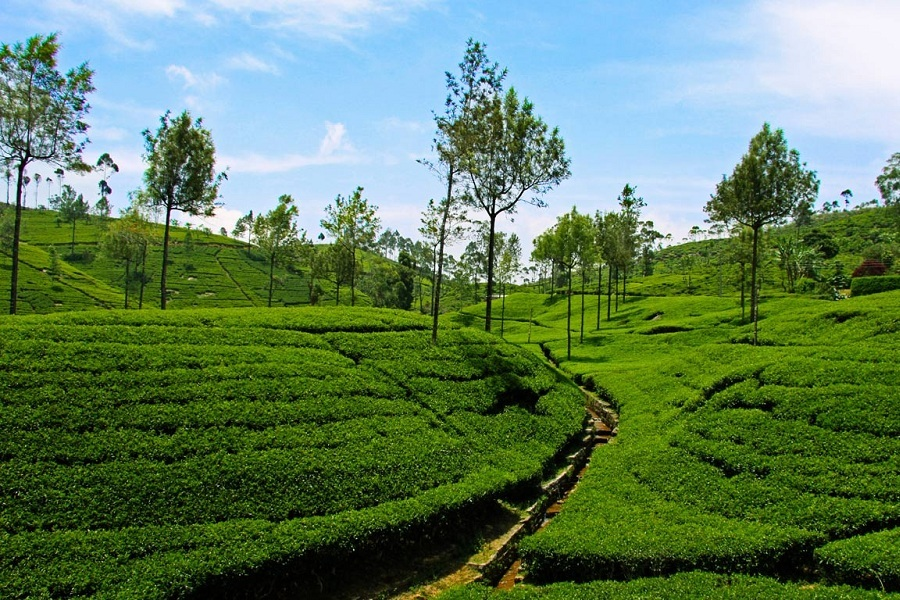

Kasaragod boasts of the largest and best preserved Fort in the whole of Kerala,
bordered by a magnificent beach. Shaped like a giant keyhole, the historic Bekal
Fort was built in the 17th century. This historic monument offers a superb view of the Arabian
Sea from its tall observation towers, which were occupied by gigantic cannons till afew centuries
ago.
Near the Fort is an old Mosque that is said to have been built by Tipu Sultan of Mysore.
Originally constructed by the rulers of the ancient Kadampa Dynasty,
the Fort changed hands over the years to the Kolathiri Rajas,
the Vijayanagara Empire, Tipu Sultan and finally, the British East India Company.

Paithalmala,Kannur
An invigorating 6 km trek, a trail interspersed with rare endemic species,
waterfalls and a panoramic view of neighbouring Karnataka are some of the primary
attractions of the magnificent hill station of Paithalmala in Kannur district.
One of the highest peaks in Kannur, this enchanting hill station is located about 65 km
from the main town and about 1,372 m. above sea level. One must traverse a good distance to
reach this quaint spot; but the payoff is immediate, as vouched by many a trekking aficionado.
Monsoon and summer are considered to be the best time to explore the beauty of this hill
station.
Trekkers also can have a dip in the cool waters of Ezharakundu Waterfalls on the way.

Meppadi,Wayanad
Meppadi is situated about 10 km from Kalpetta and it is an important destination
in the Kozhikode – Ooty road. A drive from Vythiri to this route will provide you a feel of Wayanad
district.
The charming Meppadi village with woods, verdant hillsides and coffee, tea, rubber and vanilla
plantations are
sure to capture your imagination. Vaduvanchal, another breathtakingly beautiful place nearby,
too carries all the characteristics of the regions lying in the high ranges of Western Ghats.
If you are visiting these places during spring, you may be confronted by an explosion of colours,
thanks to the blooming flora of the region.